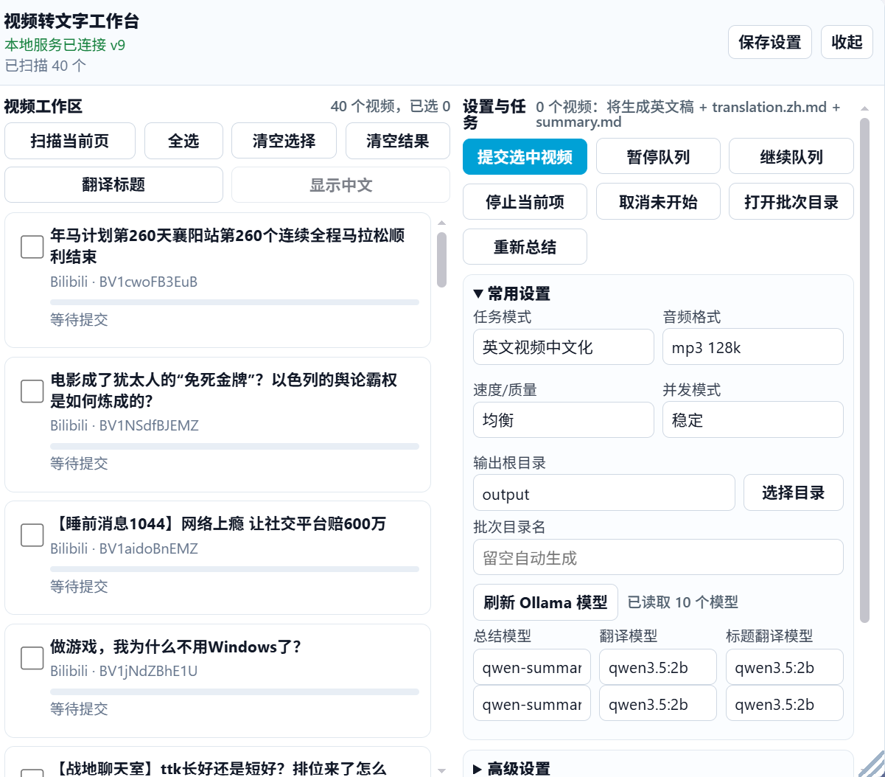
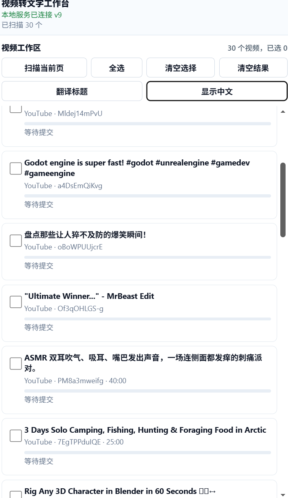
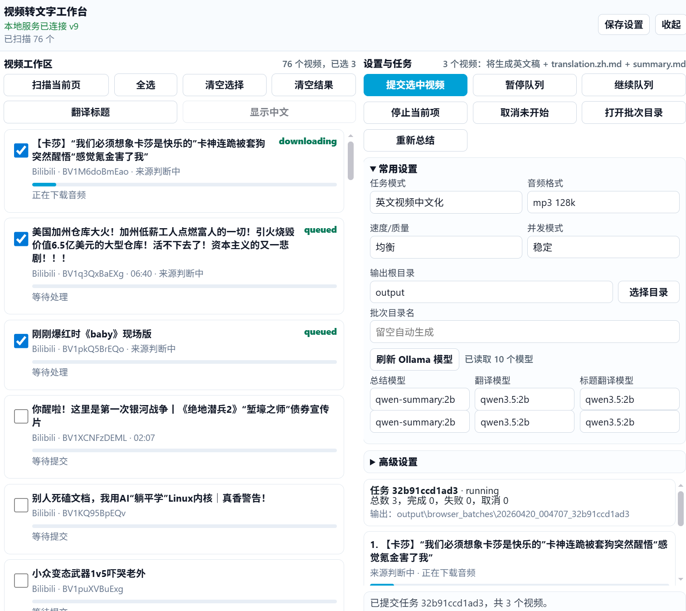
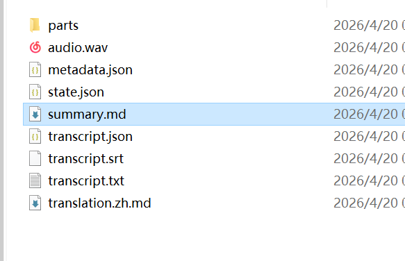
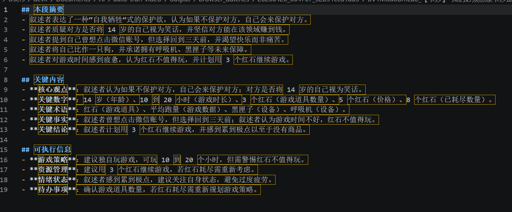

为批量视频整理而做
不再逐个复制链接、手动下载、手动整理字幕。打开页面，勾选视频，提交到本地队列，剩下交给本机模型处理。
优先使用已有字幕
平台有人工字幕或自动字幕时直接读取，节省 ASR 时间；没有字幕再调用本地 faster-whisper。
英文视频中文化
保留英文原稿，生成中文翻译和中文总结，适合快速浏览海外视频内容。
批量队列和失败重试
多个视频按队列处理，单个失败不影响后续任务，失败项可以单独重跑。
可控并发
下载、ASR、Ollama 分阶段限流，在速度和稳定之间留出可调空间。
输出结构清晰
每个批次独立目录，每个视频保留 transcript、summary、metadata 和 state。
本地优先
服务只绑定 127.0.0.1，音频、字幕、转写和总结默认都留在本机。
成品展示
把截图放进 docs/assets/ 并使用对应文件名，下面的占位框会自动变成真实截图。

浏览器插件工作台截图
docs/assets/showcase-browser-workbench.png

YouTube 扫描与标题翻译截图
docs/assets/showcase-youtube-scan.png

批量任务进度截图
docs/assets/showcase-task-progress.png

输出文件夹截图
docs/assets/showcase-output-files.png

命令行运行截图
docs/assets/showcase-cli.png
处理流程
每个视频会先尝试读取平台字幕。没有可用字幕时，才下载音频并交给本地 ASR。
1扫描视频
从当前页面读取可见视频链接。
从当前页面读取可见视频链接。
2检查字幕
优先使用已有字幕或自动字幕。
优先使用已有字幕或自动字幕。
3本地转写
没有字幕时使用 faster-whisper。
没有字幕时使用 faster-whisper。
4翻译总结
调用本机 Ollama 模型。
调用本机 Ollama 模型。
5保存结果
导出 TXT、SRT、JSON、Markdown。
导出 TXT、SRT、JSON、Markdown。
快速启动
启动本地服务后，刷新 Bilibili 或 YouTube 页面即可使用浏览器扩展。
cd C:\Users\devil\Documents\Ai\auto-tran-video
.\.venv\Scripts\python.exe main.py serve